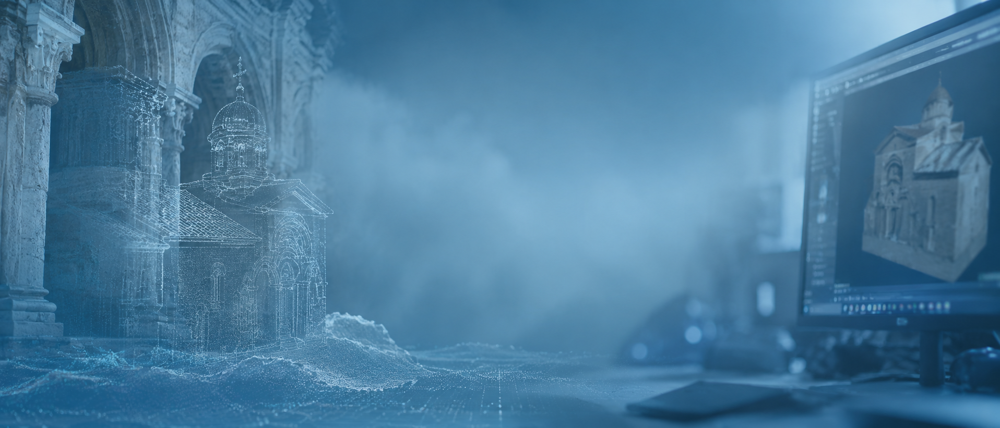

Keynote speaker
The Dream of ‘Critical Computer Visualisation’
Abstract
This lecture aims to recall the experiment launched in 1997 at the University of Zurich to establish a degree programme combining art history with applied computer science, with a view to creating a new professional field for the computer visualisation of architectural objects. Initially, the idea met with a positive response at the University of Lyon, the Politecnico di Milano and the University of Stuttgart. The starting point was the observation, already widespread at the dawn of the modern era, that a picture is often worth a thousand words. Several objectives were pursued. On the one hand, the aim was to convey vivid impressions of planned but unbuilt or only partially completed buildings, of the original appearance of altered buildings, and of the appearance of completed buildings from their originally intended vantage point, with urban planning being incorporated into this. On the other hand, the aim was to illustrate historical contexts or processes, such as the planning process and the conditions of planning of a structural, functional or typological nature. A central aim of the experiment was not merely to present results, but to demonstrate specifically the reasons behind them. That is why it was called ‘Critical Computer Visualisation’. This type of visualisation is not only suitable for providing new scientific insights; it can also be used as a teaching and learning programme. This reflection on the vision focuses primarily on its aims and method. The practical examples examinated in the past, now technically outdated, are replaced by specific references to new, more suitable buildings or plans.
Der Traum von der "Kritischen Computer-Visualisierung"
Abstract
Der Vortrag soll das 1997 an der Universität Zürich gestartete Experiment in Erinnerung rufen, einen Studiengang Kunstgeschichte in Verbindung mit angewandter Informatik einzurichten, um ein neues Berufsfeld für die Computer-Visualisierung architektonischer Objekte zu schaffen. Es fand anfangs Resonanz an der Universität Lyon, dem Politecnico von Mailand und der Universität Stuttgart. Ausgangspunkt war die schon zu Beginn der Neuzeit verbreitete Beobachtung, dass ein Bild oft mehr als tausend Worte sagt. Mehrere Ziele wurden angestrebt. Einerseits sollten lebendige Vorstellungen vermittelt werden von geplanten, aber nicht oder nur teilweise ausgeführten Bauten, vom ursprünglichen Aussehen veränderter Bauten und von der Erscheinung ausgeführter Bauten aus ihrer ursprünglich vorgesehenen Warte, dabei war Stadtplanung einbezogen. Andererseits sollten historische Zusammenhänge oder Abläufe vor Augen geführt werden wie Vorgang der Planung und Bedingungen der Planung baulicher, funktionaler oder typologischer Art. Ein zentraler Anspruch des Experiments bestand darin, nicht nur Ergebnisse zu präsentieren, sondern konkret die Gründe vorzuführen, aus denen sie zustande gekommen waren. Deshalb wurde es "Kritische Computer-Visualisierung" genannt. Diese Art von Visualisierung ist nicht nur geeignet, um neue wissenschaftliche Erkenntnisse zu liefern, sie kann auch als Lehr- und Lernprogramm eingesetzt werden. Die Reflexion dieser Vision bezieht sich hauptsächlich auf Anspruch und Methode. Die damals bearbeiteten praktischen Beispiele, die inzwischen technisch überholt sind, werden durch konkrete Hinweise auf neue geeignete Bauten oder Planungen ersetzt.
Keynote speaker
From Sketchfab to Scholarship: The Case for Sustainable 3D Infrastructures
Abstract
Three-dimensional models and reconstructions have been integral to humanities and social sciences research for about four decades, yet the infrastructure to sustain, publish, and formally recognise this form of scholarship has remained critically underdeveloped. The abrupt commercialisation of Sketchfab has vividly demonstrated the dangers of relying on commercial platforms for cultural preservation, reigniting urgent questions about what a robust infrastructure for 3D scholarship should look like. This keynote takes these ruptures as a starting point to reflect on ten years of infrastructural thinking in the field, drawing from the development of the PURE3D infrastructure, the first open, non-commercial infrastructure for publishing and preserving 3D Scholarly Editions, as well as its siblings and successors. Together, these projects illuminate what it means to build sustainable 3D infrastructure: not simply platforms that persist, but open systems that are technically robust, methodologically, and institutionally recognised. The keynote argues that sustainability in 3D scholarship is inseparable from recognition; until 3D outputs are treated as first-class scholarly products, comparable to articles and monographs, infrastructure investments alone will not catalyse the transformation the field demands. It calls for a collaborative, stakeholder-driven approach to infrastructure development that places FAIR principles, community ownership, citation mechanisms, and academic credit at its foundation.